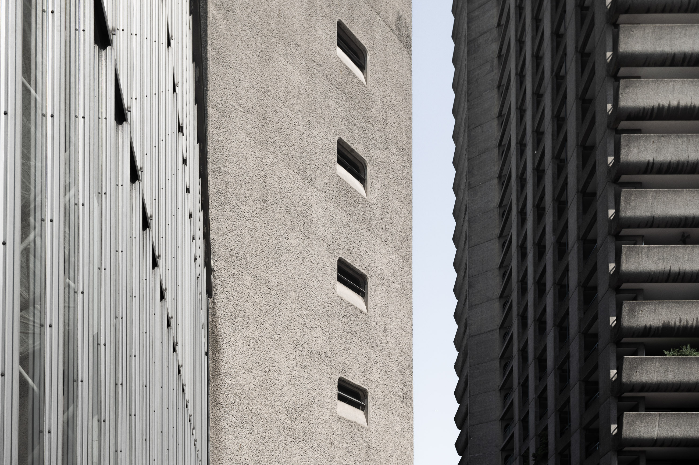
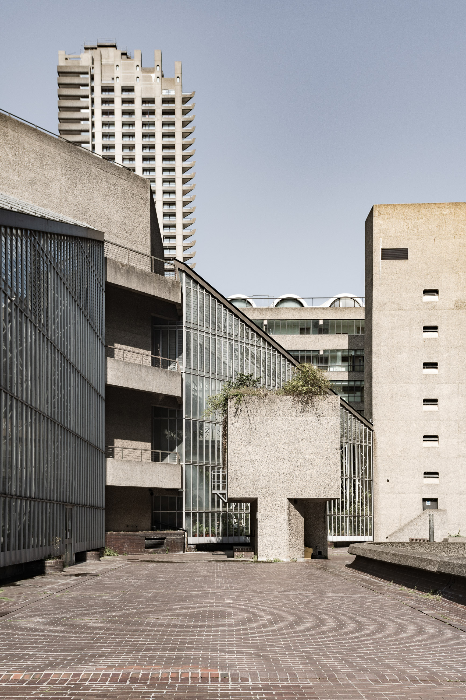

Fotografia di architettura di Gianluigi Tarantino
gianluigi tarantino
fotografia e spazio
photography and space
architettura
architecture
interior
interior
personale
personal
profilo
about
1 / 3
en
it
info@gianluigitarantino.it
instagram
©2026 Gianluigi Tarantino
p.iva 05175870756
vat no. it05175870756

